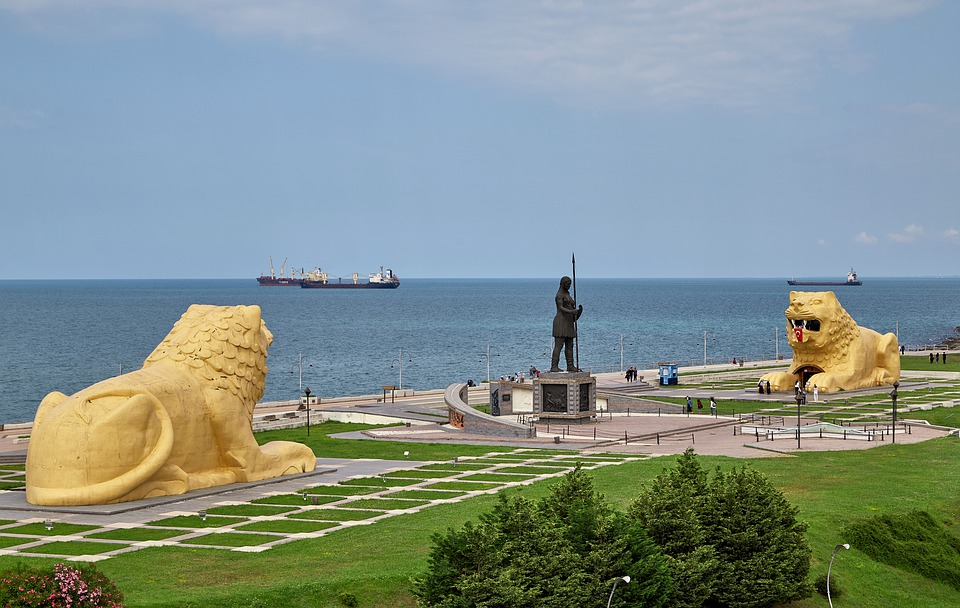

ŞEHRİM HAKKINDA
Bu sayfamda uzun zaman yaşadığım şehir olan Samsun hakkında bilgi vereceğim.Hadi başlayalım.
Samsun ili, Türkiye Cumhuriyeti topraklarında, Karadeniz bölgesi'nin Orta Karadeniz bölümünde yer alır.Samsun,büyükşehir statüsünde olmakla beraber yaklaşık 1,5 milyon nüfusuyla bölgenin en yüksek ili olup Türkiye'nin 16. en yüksek nüfuslu ilidir.Aynı zamanda göç almaya da devam etmektedir. Kuzeyinde Karadeniz bulunur.Karadeniz Bölgesi'nin eğitim, sağlık, sanayi, ticaret, ulaşım ve ekonomi açılarından en gelişmiş şehri olan Samsun; kalkınmada birinci derecede öncelikli yörelerden biridir.
Tarihi açıdan eski bir şehir olan Samsun,en eski halk olan hititlerden başlayıp birçok millete ev sahipliği yapmıştır.15.yy'dan 20.yy'a kadar Osmanlı Devleti hakimiyetinde kalan şehir, Türkiye Cumhuriyeti'nin ilanıyla Türkiye hakimiyetine girmiştir.19 Mayıs 1919'da Mustafa Kemal Atatürk'ün Samsun'a çıkışıyla başlayan milli mücadele sürecinin başlangıç durağı olmasıyla bilinir."Güneşin doğduğu şehir" sloganıyla tanıtılan şehir,"Karadeniz'in başkenti" ve "Atatürk'ün Şehri" olarak da anılmaktadır.
9.725 km² yüzölçümü bulunan Samsun coğrafyasının %45'ini dağlar, %37'sini platolar,%18 ini ovalar oluşturur ve bölgenin en yüksek noktası Akdağ'dır. Karadeniz iklimi ağırlıkta olmakla beraber karasal iklim de görülür.Ortalama yıllık sıcaklık 14,5 °C'dir.Kızılırmak ve Yeşilırmak'ın oluşturduğu deltalar, bölgede tarımsal faaliyetleri de yoğun kılmıştır.
Samsun mutfağı Karadeniz, Anadolu, Balkan ve Kafkas izleri taşımakta olup balık, hamur işi ve sebze ağırlıklıdır.Yörenin özellikle kıyı kesimlerinde karalahana, pancar, kırçan, kaldırık, madımak gibi özgü bitkiler çorba ve kavurma olarak tüketilmekte; kişniş ise çeşni olarak kullanılmaktadır.Samsun'da en çok tüketilen deniz ürünü ise tavası, buğulaması yapılan; ekmek veya pilavla birlikte tüketilebilen, ayrıca tuzlanarak da saklanabilen hamsidir.diğer bir yandan "Samsun pidesi" şehrin en bilinen yiyeceğidir ve Bafra ilçesinde "bafra pidesi" olarak geçer.Başka meşhur yemek olan "Keşkek" diğer yörelerden farklı olarak kırmızı et ile değil tavuk eti ile yapılır.Samsun-Çorum karayolu üzerindeki Çakallı mevkiinde bulunan lokantalarda hazırlanan ve Çakallı ekmeği ile servis edilen "Çakallı menemeni" de Samsun'un özgün lezzetlerinden biridir.
Samsun, Karadeniz Bölgesi'nin en uzun kıyı şeritlerinden birine sahiptir ve bu şerit Canik'ten 19 Mayıs'a kadar uzanmaktadır.Bu da turizm faaliyetlerinin gelişmesini sağlamıştır.Bölgede yüzme dışında sörf, jet ski, yelken gibi alternatif sporlar da yapılabilmektedir.Plaj turizminin yanı sıra kış turizmi de yapılan Samsun'da "Akdağ Kış Sporları ve Kayak Merkezi" en önemli turistik bölgelerdendir.Akdağ aynı zamanda yamaç paraşütü, dağcılık ve yayla turizmi merkezi olarak da öne çıkmaktadır.Amisos Tepesi'nin yamacında oluşturulan Amazon Adası'nda Amazon Heykeli yer almaktadır.Ayrıca Amazon Adası'nda Amazon Köyü adıyla bir köy oluşturulmuş ve temsilî Amazon balmumu heykelleri, kabartmaları, günlük eşyaları yerleştirilmiştir.Yine Amazon Adası'nda yer alan Amazon Heykeli'nin sağ ve sol taraflarına Anadolu Aslanları adı verilen iki heykel yerleştirilmiştir. Heykellerin içerisinde asansör olup aslanların ağız kısmına çıkılabilmekte ve Amazon Adası yüksekten izlenebilmektedir.Diğer turistik bölgelerden olan Atatürk evi,Büyük Camii,Bandırma Vapuru,Vezirköprü Şahinkaya Kanyonu,Tekkeköy Mağaraları,Ladik Gölü,Kızılırmak Deltası Kuş Cenneti; şehrin güzelliklerinden birkaçı.
{kind=link}
{kind=link}
{kind=link}


Bu sayfamda Samsun ilini genel hatlarıyla tanıttım ve şehre ait hoşunuza gidebilecek birkaç görsel ekledim.Gidip görmenizi,seyahat listenizde bulunmasını tavsiye ederim.Umarım faydalı olmuştur ;)